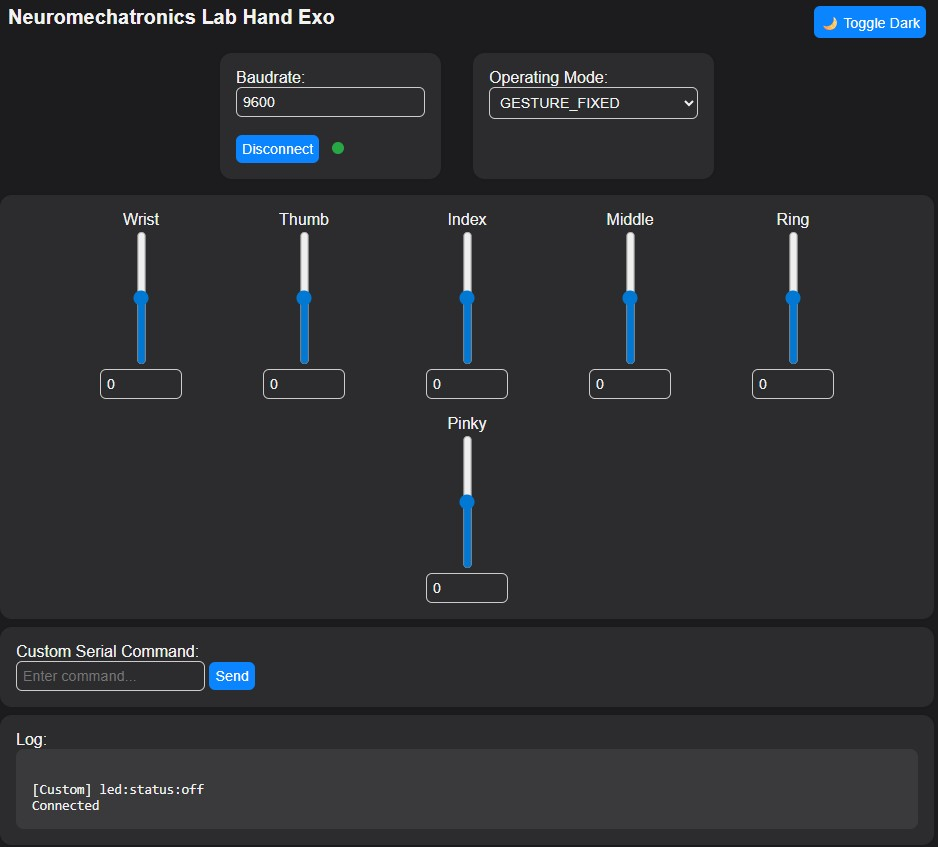

CircuitPython Wi-Fi Server
This section describes how to set up a Wi-Fi server to exchange data with the NML Hand Exoskeleton. The server supports multiple TCP clients and enables real-time communication with a serially connected exoskeleton.
Note
This server is designed for microcontrollers with Wi-Fi support, such as the Raspberry Pi Pico W. It was tested with Adafruit CircuitPython 9.2.4 (2025-01-29) on the Raspberry Pi Pico 2 W (RP2040).
Software Setup
Install CircuitPython on your Raspberry Pi Pico W. Visit the CircuitPython downloads page to download the latest UF2 file. To enter bootloader mode, hold the BOOTSEL button while plugging the board into USB. The board will mount as a USB drive (e.g., RPI-RP2, CIRCUITPY, or BOOT).
Flash the board by dragging and dropping the downloaded .uf2 file onto the mounted drive. The board will automatically reboot into CircuitPython.
Install the required libraries by either copying the lib/ folder to the CIRCUITPY drive or downloading the latest CircuitPython library bundle from the library bundle page. Minimum libraries include:
adafruit_ticks.py
simpleio.py
adafruit_httpserver
asyncio
rgbled.py # Custom
usbserialreader.py # Custom
webpage.py # Custom
Configure Wi-Fi settings in the settings.toml file at the root of the CIRCUITPY drive:
CIRCUITPYTHON_WIFI_SSID = "your_wifi_ssid" CIRCUITPYTHON_WIFI_PASSWORD = "your_wifi_password"
(Optional) Set a static IP address by adding the following lines to settings.toml:
CIRCUITPYTHON_WIFI_IP = "192.168.1.200" CIRCUITPYTHON_WIFI_HTTP_PORT = 5000 # Currently hardcoded in the codebase CIRCUITPYTHON_WIFI_TCP_PORT = 5001
Note
If no static IP is specified, the Pico W will attempt to use DHCP. However, a static IP is recommended for stability in multi-client applications.
Hardware Setup
The exoskeleton communicates with the Pico W via UART (or USB). Below are the recommended wiring connections between the Raspberry Pi Pico W and OpenRB-150:
UART Serial Connection:
Pico Pin |
OpenRB-150 Pin |
Function |
|---|---|---|
GP16 |
RX |
Serial Receive (RX) |
GP17 |
TX |
Serial Transmit (TX) |
GND |
GND |
Common Ground |
VBUS |
V |
5V Power Supply |
RGB LED Status Indicator:
Pico Pin |
LED Pin |
Function |
|---|---|---|
GP10 |
CATH |
RGB Common Cathode |
GP11 |
R |
Red Channel |
GP12 |
G |
Green Channel |
GP13 |
B |
Blue Channel |
The RGB LED provides server status feedback: - Green: Wi-Fi connected - Red: Disconnected or error - Blue: Client activity (optional)
HTTP Webpage
The server hosts a simple HTTP webpage that allows users to control the exoskeleton and view its status. The webpage is served at the root URL (/) and provides buttons for enabling/disabling motors, toggling LEDs, and viewing the current state of the exoskeleton.
{kind=link}
